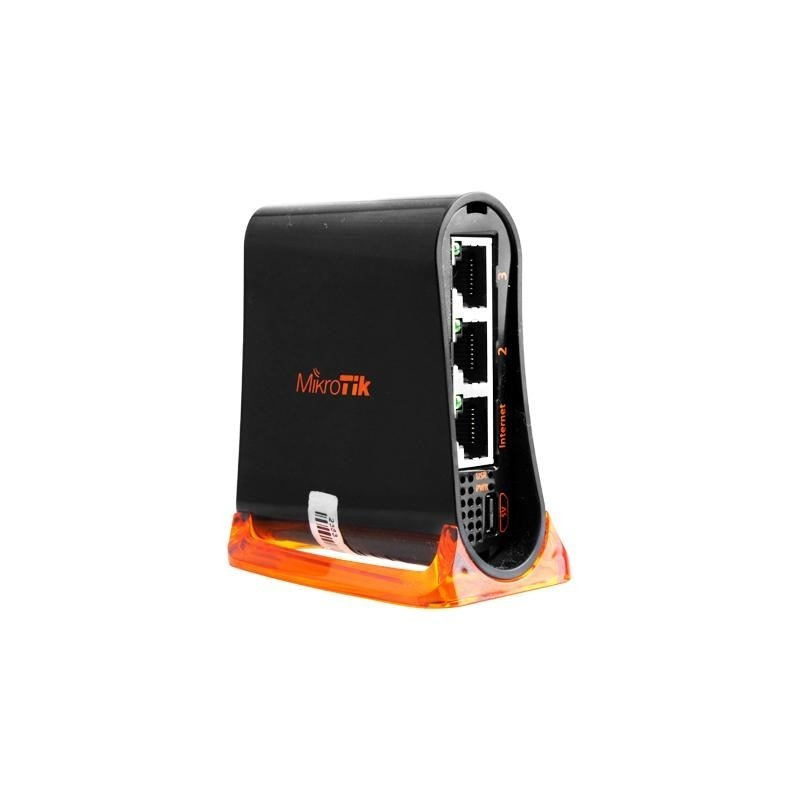
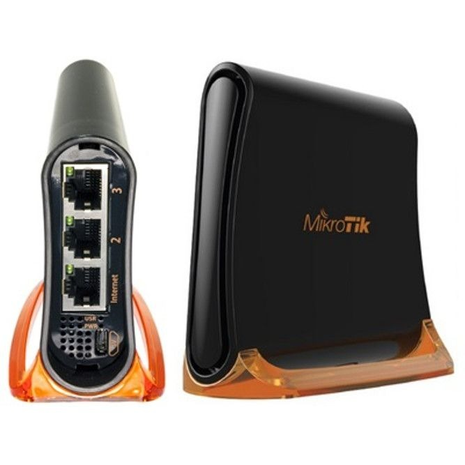
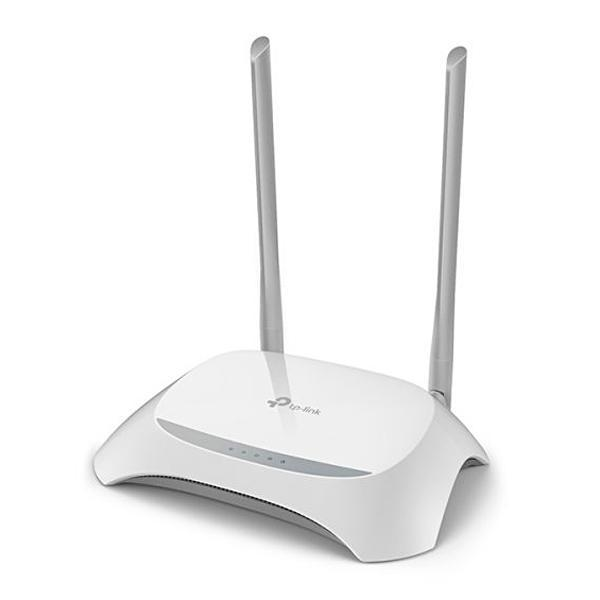
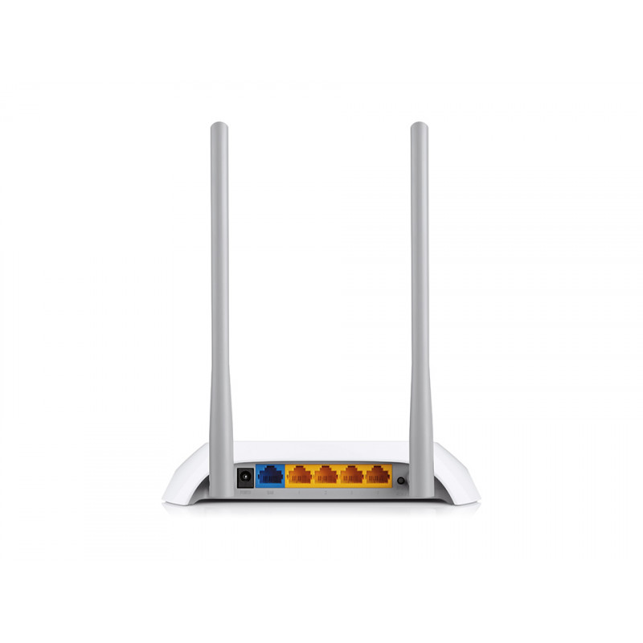
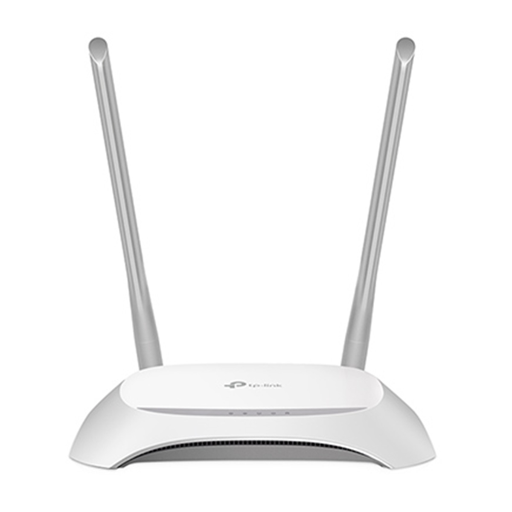

O hAP mini é um pequeno ponto de acesso sem fio de 2GHz para escritórios domésticos ou pequenos. Possui três portas, que são configuradas como uma porta de Internet e duas portas LAN, mas podem ser reconfiguradas conforme desejado, usando as poderosas opções de configuração do RouterOS.



O roteador TL-WR849N da TP-Link possui um design compacto pelo qual pode ser posicionado em qualquer lugar sem ocupar muito espaço. Foi desenvolvido para quem deseja criar uma rede LAN, seja por cabos ou através da tecnologia Wireless. Conta com velocidade de transferência de 300Mbps que proporciona ao usuário maior agilidade para navegar na Internet.